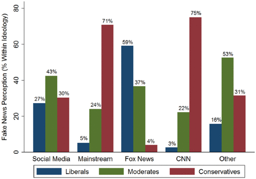

There is definitely reason to suspect that people’s political affiliation could determine which news sources they consider fake news. However does research support this?
One study indicated by Linden et al. determined that “[…] we find evidence of the fake news effect: a psychological bias where well-known liberal outlets (e.g. CNN) are described as ‘fake news’ by conservatives and, in turn, well-known conservative outlets (e.g. Fox News) are described as ‘fake news’ by liberals.” (Lindenet al.). The study also noted than CNN and Fox News were the most popular media associations since they are both widely known to be representative of liberal and conservative viewpoints, respectively.
One explanation for this is that people tend to have a communal sense of motivation to defend their moral commitments that generally align with their political beliefs. The study also pointed out that the fake news effect seems to be greater for conservatives than liberals, as “(75%) think CNN is fake news than liberals think Fox News (59%) is fake news” (Lindenet al.).
In recent years there has been increasing concern that social media sites are responsible for exacerbating political polarization by creating “echo chambers,” where individuals are exposed only to information from like-minded peers.
In a study conducted by Bail et al., Republican and Democrat twitter users were offered monetary incentive to follow bots that retweeted messages from elected officials and opinion leaders with opposing political views. The findings of this study revealed that while Democrats exhibited slightly more liberal attitudes post treatment, Republicans exhibited substantially more conservative views posttreatment, revealing significant differences in “backfire” effects that increased political polarization.
While past experiments suggest intergroup exchanges lead to compromise and mutual understanding, efforts to reduce political polarization on social media will require greater care and learning.